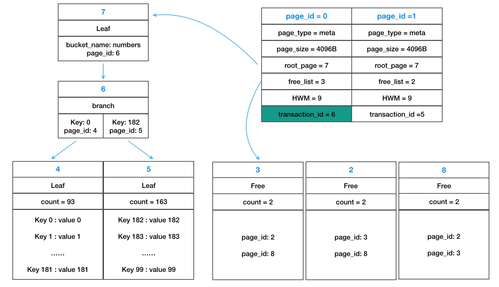

BoltDB
源码阅读
对一个提供嵌入式、可序列化和支持事务的 KV 数据库而言，Bolt 的代码量相对较少(少于3000行)，如果对数据库原理感兴趣，可以作为基础入门。
下面是 Bolt 的主要入口点：
bolt.Open()- 初始化数据库。如果数据库不存在负责创建数据库，获得文件的一个排他锁，读取元页面并且完成文件内存映射。DB.Begin()- 根据writeable参数，开始一个只读或者读写事务。这需要简单地获取“元”锁来跟踪未完成的事务。一次只能存在一个读写事务，所以在读写事务周期中需要获得“rwlock”。Bucket.Put()- 将键值对写入一个桶中，检查入参之后，用一个游标遍历页面的和位置的 B+ 树，这个位置被用来写入键值对。一旦找到位置，存储桶将底层页面和页面的父页面作为“节点”物化到内存中中。这些节点是在读写事务期间发生变化的地方。这些更改在提交时刷新到磁盘。Bucket.Get()- 从存储桶中或者键值对。使用游标来移动到键值对所在的页面和位置。在只读事务期间，键值对被直接从底层 mmap 文件的引用返回，所以没有分配的开销。对于读写事务，此数据可能会引用 mmap 文件或其中一个内存中节点值。Tx.Commit()- 将内存中的脏节点和空闲页列表转换为要写入磁盘的页面。磁盘写入发生在两个阶段。第一，脏页面被吸入到磁盘并且会调用fsync。第二，一个新的增加事务 ID 元页面被写入并且调用fsync。这两个阶段的写入可以确保部分写入的数据页面在发生崩溃时被忽略，因为指向它的元页面从不写入。部分写入的元页面因为用校验和写入而失效。Cursor- 这个对象对于磁盘页面和内存节点的遍历很简单，可以查找一个指定的 key，移动到第一个或者最后一个值，可以向前或者向后移动。对用户而言，游标会透明地处理在 B+ 树的上下移动。
下面通过一个简单示例分析上面的主要步骤：
package main import ( "fmt" "github.com/iswade/bbolt" "strconv" ) func main() { path := "/tmp/bolt.db" db, err := bolt.Open(path, 0666, nil) // ① if err != nil { fmt.Println("open db failed:", path, err) return } defer db.Close() tx, err := db.Begin(true) // ② if err != nil { fmt.Println("begin trans failed:", err) return } defer tx.Rollback() tx.DeleteBucket([]byte("numbers")) bucket, err := tx.CreateBucketIfNotExists([]byte("numbers")) // ③ if err != nil { fmt.Println("create buckets failed") return } for i := 0; i < 256; i++ { bucket.Put([]byte(strconv.Itoa(i)), []byte(strconv.Itoa(i))) // ④ } val := bucket.Get([]byte("128")) // ⑤ fmt.Println(string(val)) tx.Commit() // ⑥ return }
打开数据库 ①
- 打开数据库文件，如果不存在则创建
- 通过锁定文件描述符的方式提供互斥访问(只读共享锁，写入互斥锁，syscall.Flock）（防止多个进程同时写入冲突）
- 文件大小为0，初始化数据库，创建新的数据库，初始化 meta page 以及1个 free，1个 leaf 页面，然后写出到文件，并且做一次落盘操作
- 文件大小不为0，读取第一个 meta page，获取页面的大小
- buf = db.mmap() 映射物理文件（通过已经打开的文件描述符），记录映射地址
- 读取空闲页面链表
- 返回 db 结构给客户端
开启事务 ②
- 开启写事务 beginRWTx
- 添加数据库的互斥锁（保证只有一个写事务，防止进程内多个写事务访问冲突）
- 创建事务结构，并进行初始化
创建桶 ③
- 查找是否已经存在桶，如果不存在则创建一个桶的 leaf 节点
- 将桶信息放到这个节点中
增加记录 ④
- 获取插入的页节点，保存到栈中
- 获取对应的node(节点表示内存中，反序列化的页面)
- 插入inode(kv)到页面的位置
查找 key ⑤
- 打开 bucket 时，找到对应的 bucket 页面
- 查找 key 时，递归查找到对应的页面，找到对应的叶节点
- 然后通过二分查找页节点，找到 index 然后返回对应的值
提交事务 ⑥
- 如果有删除数据，重新平衡 nodes
- 将数据写入脏页面
- 释放旧的根节点
- 释放旧的空闲链表
- 将脏页面写出到磁盘
- 将 meta 页面写出到磁盘
- 事务关闭
数据组织

不同数据库对比
Postgres, MySQL & 其它
关系数据库将数据组织为行并且仅仅通过 SQL 来访问。这种方法提供了存储和查询数据的灵活性，但是会在解析和计划 SQL 语句时有较大的开销。Bolt 通过字节切片 key 来访问所有数据。所以 Bolt 对于读取和写入数据速度很快，但是不提供内置的连接操作。
大多数关系数据库（除了 SQLite 之外）都是独立的服务器，与应用程序分离。这种系统提供了多应用访问单个数据库的灵活性，但是需要增加序列化和传输数据的开销。Bolt 通过库的形式包含在应用程序之中。这样数据对应用更近，但限制了多进程访问数据。
LevelDB，RocksDB
LevelDB 和它的衍生产品（RocksDB，HyperLevelDB）跟 Bolt 比较像，都是以库的形式嵌入到引用程序中，但是底层的数据结构是 LSM tree。LSM tree 通过使用预写日志、称之为 SSTables 的排序文件优化了随机写入的性能。Bolt 使用 B+tree，并且只有一个文件。两种方法都有折中。
如果需要很高的随机写入吞吐量（>10,000 w/sec）或者需要使用普通磁盘，LevelDB 是更好的选择。如果引用读的很多，并且需要大量的范围查找，Bolt 是更好的选择。
另一个更重要的考虑是 LevelDB 不提供事务保证。支持批量写入键值对，支持读取快照，但是不提供安全的 CAS 操作。Bolt 支持完全可序列化的 ACID 事务。
LMDB
Bolt 最初是 LMDB 的移植，所以架构上很像。都使用了 B+ 树，提供了完全可序列化事务的 ACID 语义，使用一写多读支持无锁 MVCC。
两个项目也有不一样的地方。LMDB 主要关注性能而 Bolt 主要关注易用性。例如，LMDB 允许一些不安全动作如为了提高性能直接写入操作。Bolt 禁止使得数据库处于损坏状态的动作。唯一的例外是DB.NoSync。
API 也有一些不同。打开一个mdb_env时，LMDB 需要指定最大的映射内存大小，但 Bolt 会自动增加映射的内存。LMDB用多个标志重载 getter 和 setter 函数，而 Bolt 则将这些特殊的情况分解成它们自己的函数。
（译者注：分析上面的主要差异）
| 对比 | 关系数据库 | KV 数据库 | LMDB | BoltDB |
|---|---|---|---|---|
| 接口 | SQL | API | API | API |
| 形式 | server | lib | server | lib |
| 事务 | 支持 | 不支持 | 支持 | 支持 |
| 索引 | B+ tree | LSM tree | B+ tree | B+ tree |
| 性能 | 中 | 写:高 读:中 | 写:中 读:高 | 写:中 读:高 |
| 易用性 | 中 | 中 | 中 | 高 |
注意事项
对于不同的任务，选择合适的工具很重要，Bolt 也不例外。这里是一些注意项：
- Bolt 适合读密集型负载。顺序写性能也很快，但随机写比较慢。可以使用
DB.Batch()或者添加预写日志以缓解此问题。 - Bolt 使用了B+树所以可以有大量的页随机访问，SSD比普通磁盘有显著的性能提升。
- 尽量避免长时间读事务，Bolt 使用写时拷贝，所以当有旧的事务使用的时候，旧的页面不能被回收。
- 从 Bolt 返回的字节切片仅仅在事务期间有效。一旦事务被提交或者回滚，切片指向的内存会被新的页面重新使用，或者从虚拟内存中取消映射，访问的时候回出现
无效地址错误。 - Bolt 使用了在数据库文件上使用了排他写锁，所以不能被多个进程共享。
- 使用
Bucket.FillPercent的时候，需要格外注意，设置较高的存储区域填充比例，随机写入会导致数据库出现非常差的页利用。 - 使用更大的存储区域，一旦变得比页面大小（4KB）大的时候，小存储区域会导致页面利用率很差。
- 将大量随机写入批量加载到新存储区可能会很慢，因为页面在事务提交之前不会分裂。不建议在单个事务中将超过100,000个键/值对随机插入单个新存储区域中。
- Bolt使用内存映射文件，以便底层操作系统处理数据的缓存。通常情况下，操作系统将缓存尽可能多的文件，并在需要时释放内存给其他进程。这意味着Bolt在处理大型数据库时显示使用的内存非常高。 但是，这是预期的，操作系统将根据需要释放内存。Bolt可以处理比可用的物理内存大得多的数据库，只要它的内存映射适合进程虚拟地址空间。 这在32位系统上可能会有问题。
- Bolt数据库中的数据结构是内存映射，所以数据文件将是区分大小端的。 这意味着你不能将Bolt文件从一个小端机器复制到一个大端机器并使其工作。 对于大多数用户来说，这不是一个问题，因为大多数现代的CPU都是小端的。
- 由于页面在磁盘上的布局方式，Bolt不能截断数据文件并将空闲页面返回到磁盘。 相反，Bolt在其数据文件中保留一个未使用页面的空闲列表。 这些空闲页面可以被以后的事务重复使用。 由于数据库通常会增长，因此这对于许多使用情况很有效。 但是，需要注意的是，删除大块数据不会回收磁盘上的空间。